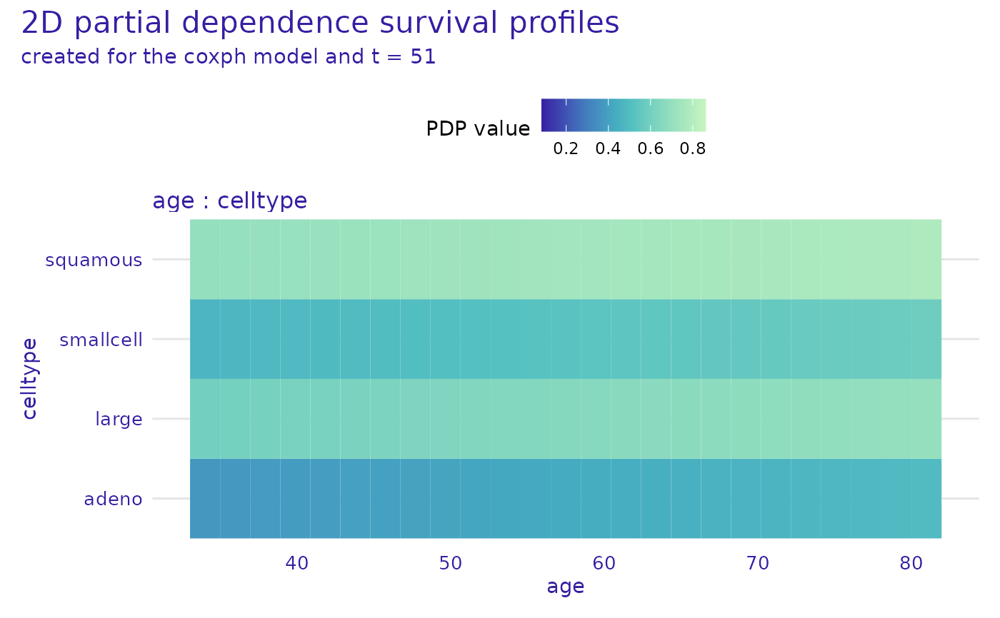
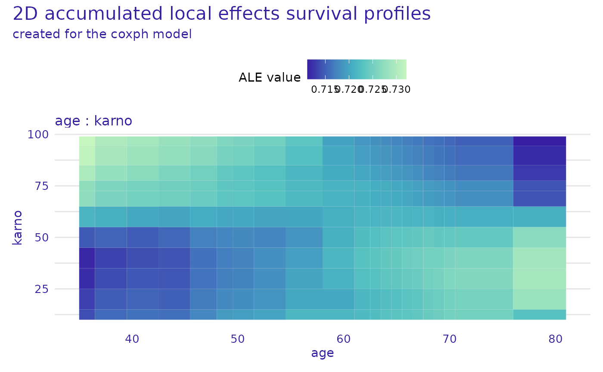

R/plot_model_profile_2d.R
plot.model_profile_2d_survival.RdThis function plots objects of class "model_profile_2d_survival" created
using the model_profile_2d() function.
# S3 method for model_profile_2d_survival
plot(
x,
...,
variables = NULL,
times = NULL,
marginalize_over_time = FALSE,
facet_ncol = NULL,
title = "default",
subtitle = "default",
colors = NULL
)an object of class model_profile_2d_survival to be plotted
additional objects of class model_profile_2d_survival to be plotted together
list of character vectors of length 2, names of pairs of variables to be plotted
numeric vector, times for which the profile should be plotted, the times must be present in the 'times' field of the explainer. If NULL (default) then the median survival time (if available) or the median time from the explainer object is used.
logical, if TRUE then the profile is calculated for all times and then averaged over time, if FALSE (default) then the profile is calculated for each time separately
number of columns for arranging subplots
character, title of the plot. 'default' automatically generates either "2D partial dependence survival profiles" or "2D accumulated local effects survival profiles" depending on the explanation type.
character, subtitle of the plot, 'default' automatically generates "created for the XXX model", where XXX is the explainer labels, if marginalize_over_time = FALSE, time is also added to the subtitle
character vector containing the colors to be used for plotting variables (containing either hex codes "#FF69B4", or names "blue")
A collection of ggplot objects arranged with the patchwork package.
# \donttest{
library(survival)
library(survex)
cph <- coxph(Surv(time, status) ~ ., data = veteran, model = TRUE, x = TRUE, y = TRUE)
cph_exp <- explain(cph)
#> Preparation of a new explainer is initiated
#> -> model label : coxph ( default )
#> -> data : 137 rows 6 cols ( extracted from the model )
#> -> target variable : 137 values ( 128 events and 9 censored , censoring rate = 0.066 ) ( extracted from the model )
#> -> times : 50 unique time points , min = 1.5 , median survival time = 80 , max = 999
#> -> times : ( generated from y as uniformly distributed survival quantiles based on Kaplan-Meier estimator )
#> -> predict function : predict.coxph with type = 'risk' will be used ( default )
#> -> predict survival function : predictSurvProb.coxph will be used ( default )
#> -> predict cumulative hazard function : -log(predict_survival_function) will be used ( default )
#> -> model_info : package survival , ver. 3.5.7 , task survival ( default )
#> A new explainer has been created!
cph_model_profile_2d <- model_profile_2d(cph_exp,
variables = list(
c("age", "celltype"),
c("age", "karno")
)
)
head(cph_model_profile_2d$result)
#> _v1name_ _v2name_ _v1type_ _v2type_ _v1value_ _v2value_ _times_
#> 1 age celltype numerical categorical 35 adeno 1.5
#> 2 age celltype numerical categorical 36.9166666666667 adeno 1.5
#> 3 age celltype numerical categorical 38.8333333333333 adeno 1.5
#> 4 age celltype numerical categorical 40.75 adeno 1.5
#> 5 age celltype numerical categorical 42.6666666666667 adeno 1.5
#> 6 age celltype numerical categorical 44.5833333333333 adeno 1.5
#> _label_ _yhat_
#> 1 coxph 0.9731107
#> 2 coxph 0.9735464
#> 3 coxph 0.9739753
#> 4 coxph 0.9743973
#> 5 coxph 0.9748127
#> 6 coxph 0.9752214
plot(cph_model_profile_2d, variables = list(c("age", "celltype")), times = cph_exp$times[20])

cph_model_profile_2d_ale <- model_profile_2d(cph_exp,
variables = list(c("age", "karno")),
type = "accumulated"
)
head(cph_model_profile_2d_ale$result)
#> _v1name_ _v2name_ _v1type_ _v2type_ _v1value_ _v2value_ _times_ _yhat_
#> 1 age karno numerical numerical 34 10 1.5 0.9816427
#> 2 age karno numerical numerical 34 10 4.0 0.9550537
#> 3 age karno numerical numerical 34 10 7.0 0.9291853
#> 4 age karno numerical numerical 34 10 8.0 0.8959009
#> 5 age karno numerical numerical 34 10 10.0 0.8798823
#> 6 age karno numerical numerical 34 10 12.0 0.8568626
#> _right_ _left_ _top_ _bottom_ _count_ _label_
#> 1 36.5 34 10 15 0 coxph
#> 2 36.5 34 10 15 0 coxph
#> 3 36.5 34 10 15 0 coxph
#> 4 36.5 34 10 15 0 coxph
#> 5 36.5 34 10 15 0 coxph
#> 6 36.5 34 10 15 0 coxph
plot(cph_model_profile_2d_ale, times = cph_exp$times[c(10, 20)], marginalize_over_time = TRUE)

# }